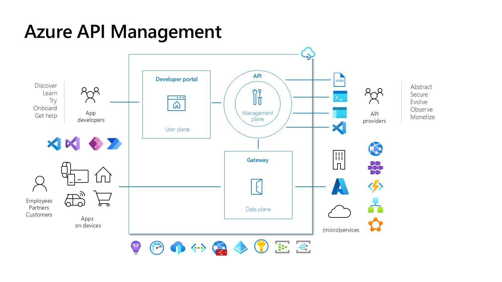
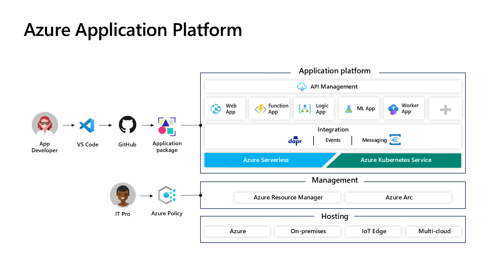
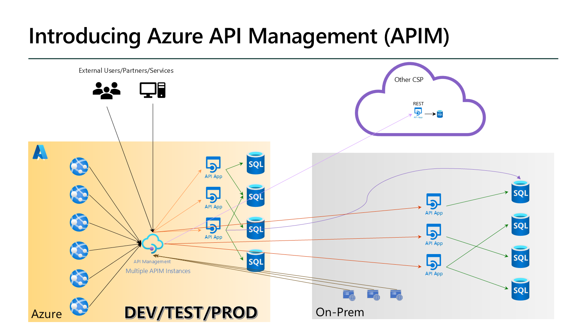
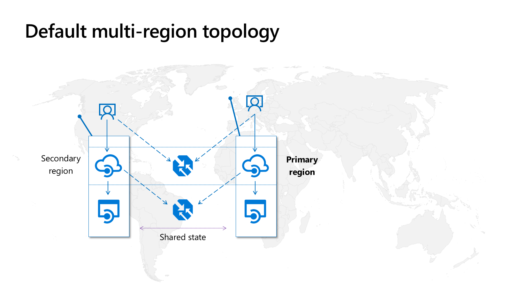
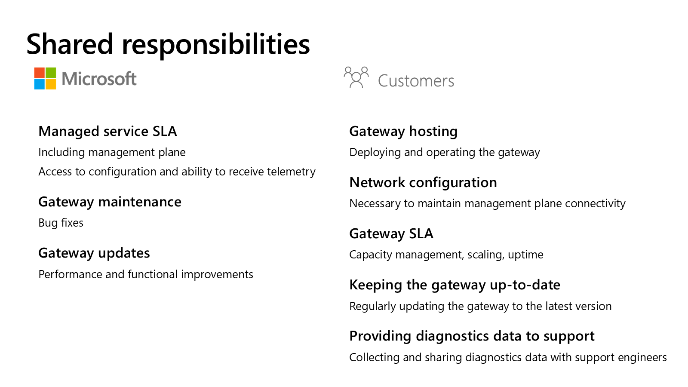

Three Components, Different Audiences
Management plane
You configure APIs, policies, products, and subscriptions through the Azure portal, management APIs, or automation.
Gateway
Your consumers call this endpoint. It routes requests, executes configured policies, and emits telemetry.
Developer portal
Your consumers read documentation, discover published APIs, request subscriptions, and test calls.
flowchart LR
P[API publisher] --> M[Management plane]
M -.-> G[Gateway]
M -.-> D[Developer portal]
C[API consumer] --> D
C --> G
G --> B[Backend service]
class P,C external
class M,G,D,B azure
Blue nodes are platform and backend services. Dashed arrows show configuration relationships, not the API request route.

Complementary services address different concerns: Key Vault stores secrets and certificates; Azure Monitor and Application Insights provide operational evidence; Microsoft Entra ID supplies identities and tokens. Application Gateway, virtual networks, and other perimeter services address network and web-application protection. Their presence in a picture does not enable them automatically.
Choose Features, Not Just a Name
| Requirement | Design implication |
|---|---|
| Workshop evaluation | Use classic Developer. It is non-production, has no SLA, and supports the developer portal needed here. |
| Production availability | Choose a production tier and verify its specific availability commitments; do not carry Developer assumptions into production. |
| Networking isolation | Distinguish inbound private connectivity from outbound backend access. Virtual network integration and injection are different capabilities. |
| Multi-region or self-hosted gateway | Check the current feature matrix. Classic and v2 tiers are not interchangeable feature-for-feature. |
| Developer self-service | Verify portal support and enablement. Consumption does not include the developer portal. |
Basic v2, Standard v2, and Premium v2 are generally available alongside classic and Consumption tiers. Choose based on the current feature and region documentation rather than a diagram from an older deck.
Keep the Gateway Near the Workload
A managed gateway runs in Azure. A self-hosted gateway lets you place gateway execution in an environment you operate while managing it from APIM. You take responsibility for that gateway's hosting, networking, updates, and availability.
How to choose
Start from backend reachability, latency, regulatory boundaries, and operational ownership. A public gateway does not require every backend to be public; the connectivity model and tier must support your intended route.
Separate API Management From Application Hosting
APIM manages the facade; your backend still runs on a hosting platform such as App Service, Functions, Kubernetes, or infrastructure outside Azure. Developer tools produce application code and management artifacts, while deployment tools configure the Azure resources. These are separate responsibilities even when a single pipeline performs them.


Keep development, test, and production configuration explicit. Use environment-specific backend URLs, identities, and secret references, and avoid promoting developer credentials into production. See deployment automation for configuration promotion.
Distinguish Regions, Zones, and Backend Resilience
A regional gateway close to consumers can reduce gateway latency, but a distant or unavailable backend can still dominate the request. Choose supported regions using current availability guidance and consider data location, backend reachability, and your recovery objectives together.
In the documented classic Premium multi-region model, gateways run in additional regions while the management plane and developer portal remain in the primary region. Secondary gateways can continue with their latest configuration if the primary region fails; that does not make the portal or management endpoint region-independent.

| Decision | What to account for |
|---|---|
| Regional routing | Public traffic routing can select a low-latency available gateway; internal VNet deployments require your routing solution. Regional endpoints allow explicit routing choices. |
| Regional state | Rate-limit counters and built-in caches are regional. Do not assume a global counter or shared cached response. |
| Availability zones | Separate failure domains within a region; they do not replace a cross-region recovery strategy. |
| Backend availability | Design backend capacity, identity, connectivity, and failover separately from gateway availability. |
Zone configuration differs by tier. Current guidance covers classic Premium, Standard v2, and Premium v2: classic Premium supports automatic or manual configuration, while zone redundancy for the documented v2 tiers is selected at creation. Verify region support and deployment constraints before provisioning rather than repeating the deck's old zone or SLA rules.
Plan Capacity and Scaling
Scaling gateway capacity does not scale the backend or remove an expensive policy. Measure request volume, latency, failures, and gateway resource pressure before deciding whether to add capacity, change policy work, cache responses, or improve the backend.
Manual scaling and autoscaling depend on the tier and deployment model. Classic gateway capacity metrics and v2 CPU/memory metrics are not interchangeable. Account for scale-operation time, configured minimums, cost, and enough remaining capacity during maintenance or a failure.
Own the Self-Hosted Runtime
The self-hosted gateway is a Linux container that can run near on-premises or other-cloud backends. Kubernetes, including Azure Arc-enabled Kubernetes, is one deployment option. Configuration remains associated with an APIM instance in Azure; runtime placement is not the same as moving the entire APIM service.
The gateway needs outbound connectivity to its required Azure endpoints for configuration and configured telemetry. Plan for disconnection, local configuration recovery, monitoring, and upgrades. Feature and policy support differs from the managed gateway; "functionally equivalent" is not a safe blanket assumption.

You operate container hosting, network configuration, capacity, uptime, image updates, and support diagnostics. Microsoft maintains the service and gateway software. Pin and test gateway versions for production rather than allowing an unreviewed rolling image tag to change your runtime.